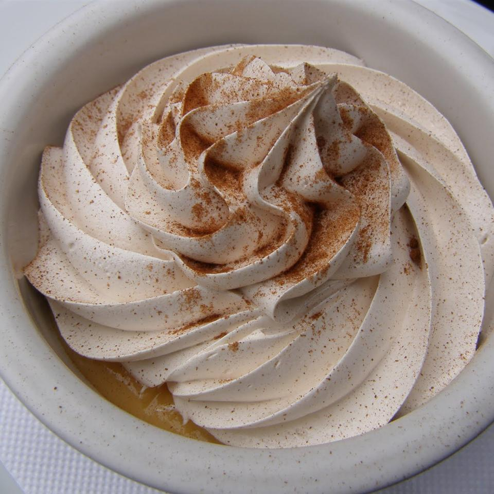

Suspiro Limeño

Description
This is a classic Peruvian dessert which is very popular in Chile, it's irresistible for all ages! It's easy and
I've been able to prepare it myself since I was little! Try it, you won't regret it!
Ingredients
- 1 (14 ounce) can sweetened condensed milk
- 1 (12 fluid ounce) can evaporated milk
- 1 tablespoon vanilla extract
- 2 beaten egg yolks
- 2 beaten egg white
- 1 cup confectioners' sugar
- ¼ teaspoon ground cinnamon (Optional)
Steps
- Whisk together the sweetened condensed milk, evaporated milk, vanilla, and egg yolks in a saucepan. Place
over medium-low heat and gently cook until the mixture thickens, stirring constantly with a wooden spoon,
about 30 minutes. Pour into a heatproof serving dish and set aside.
- Whisk together the sweetened condensed milk, evaporated milk, vanilla, and egg yolks in a saucepan. Place
over medium-low heat and gently cook until the mixture thickens, stirring constantly with a wooden spoon,
about 30 minutes. Pour into a heatproof serving dish and set aside.
Home